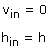
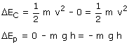

a)
El trabajo del rozamiento no se puede calcular directamente porque la normal de la superficie va cambiando durante el recorrido (La normal vale N = mg·cos α siendo α la inclinación de la curva en cada punto del recorrido). En general este tipo de cálculo se hace por integración.
En este problema se puede calcular el trabajo de rozamiento aplicando el principio de conservación:
Cambios de energía:
|
|
 |
|
|
 |

Durante la bajada la bolita está sometida a su peso, la normal y la fuerza de rozamiento de la superficie. El trabajo de la normal es cero porque dicha fuerza es perpendicular al desplazamiento, el trabajo del peso no se cuenta porque está incluido en la variación de energía potencial y el trabajo del rozamiento, Troz lo dejamos como incógnita
Por tanto T = Troz
Aplicando el principio de Conservación:

Sale un trabajo de rozamiento negativo como está mandado